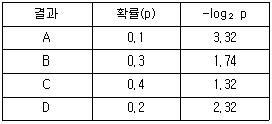
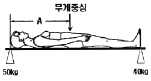
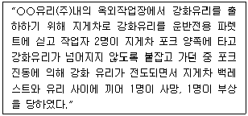
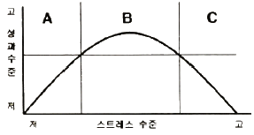

인간공학기사 (2012-03-04 기출문제)
1과목: 인간공학개론
1. 다음 중 양립성에 적합하게 조종장치와 표시장치를 설계할 때 얻는 효과로 볼 수 없는 것은?
- 반응시간의 감소
- 학습시간의 단축
- 사용자 만족도 향상
- 인간실수 증가
(정답률: 92%)

2. 다음 중 인간의 기억을 증진시키는 방법으로 적절하지 않은 것은?
- 가급적이면 절대식별을 늘이는 방향으로 설계하도록 한다.
- 기억에 의해 판별하도록 하는 가지 수는 5가지 미만으로 한다.
- 여러 자극차원을 조합하여 설계하도록 한다.
- 개별적인 정보는 효과적인 청크(chunk)로 조직되게 한다.
(정답률: 48%)
3. 다음 중 청각적 암호화 방법에 관한 설명으로 틀린 것은?
- 진동수가 많을수록 좋다.
- 음의 방향은 두 귀 간의 강도차를 확실하게 해야 한다.
- 지속시간은 2~3수준으로 하고, 확실한 차이를 두어야 한다.
- 강도는 4~5수준이 좋고, 순음의 경우는 1000~4000 Hz로 한정할 필요가 있다.
(정답률: 89%)
4. 다음 중 Weber의 법칙에 관련된 사항을 올바르게 설명한 것은?
- 특정 감각기관의 기준 자극과 변화를 감지하기 위해 필요한 자극의 차이는 원래 제시된 자극의 수준에 비례한다.
- 자극 사이의 변화를 감지할 수 있는 두 자극 사이의 가장 큰 차이값을 변화감지역이라 한다.
- Weber비는 기준 자극을 변화감지역으로 나눈 값이다.
- 특정감각기관의 변화감지역이 클수록 감지능력은 높아진다.
(정답률: 57%)
5. 다음 중 음압수준이 120dB인 1000Hz 순음의 sone 값은?
- 256
- 128
- 64
- 32
(정답률: 79%)
6. 다음 중 인체측정의 정적 치수 측정에 관한 설명으로 틀린 것은?
- 형태학적 측정을 의미한다.
- 마틴식 인체측정 장치를 사용한다.
- 나체 측정을 원칙으로 한다.
- 상지나 하지의 운동범위를 측정한다.
(정답률: 80%)
7. 다음 중 시력의 척도와 그에 대한 설명으로 틀린 것은?
- Vernier 시력 - 한 선과 다른 선의 측방향 변위(미세한 치우침)를 식별하는 능력
- 최소 가분 시력 - 대비가 다른 두 배경의 접점을 식별하는 능력
- 최소 인식 시력 - 배경으로부터 한 점을 식별하는 능력
- 입체 시력 - 깊이가 있는 하나의 물체에 대해 두 눈의 망막에서 수용할 때 상이나 그림의 차이를 분간하는 능력
(정답률: 72%)
8. 다음 중 인간공학 연구에 사용되는 변수에 관한 설명으로 옳은 것은?
- 독립변수는 평가 척도로 관심의 대상이 되는 변수이다.
- 종속변수는 조사 연구되어야 할 인자(factor)이다.
- 조명 수준, 작업 자세, 정보 전달 방법은 독립변수이다.
- 종속변수의 값은 연구자가 변화시킬 수 있다.
(정답률: 49%)
9. 인체측정자료의 응용원칙 중 출입문, 통로 등의 설계시 가장 적합한 원칙은?
- 조절식 범위를 이용한 설계
- 최소치를 이용한 설계
- 평균치를 이용한 설계
- 최대치를 이용한 설계
(정답률: 93%)
10. 다음 중 최적의 조종-반응비율(C/R비) 설계시 고려해야 할 사항으로 적절하지 않은 것은?
- 목시거리가 길면 길수록 조절의 정확도는 낮아진다.
- 작업자의 조절 동작과 계기의 반응 사이에 지연이 발생한다면 C/R비를 높여야 한다.
- 조정장치의 조작 방향과 표시장치의 운동 방향을 일치시켜야 한다.
- 계기의 조절시간이 가장 짧아지는 크기를 선택하되 크기가 너무 작아지는 단점도 고려해야 한다.
(정답률: 80%)
11. 다음 중 fitts의 법칙에 관한 설명으로 틀린 것은?
- 반응시간에 대한 법칙이다.
- 거리에 비례하고, 타켓의 폭에 반비례한다.
- 조작 장치의 설계에 광범위하게 이용한다.
- 동작시간을 동작에 관련된 정보와 연관시킬 수 있다.
(정답률: 41%)
12. 다음 중 인간공학에 대한 설명으로 적절하지 않은 것은?
- 인간과 사물의 설계가 인간에게 미치는 영향에 중점을 둔다.
- 자신을 모형으로 사물을 설계에 반영한다.
- 인간의 행동, 능력, 한계, 특성에 관한 정보를 발견 하고자 하는 것이다.
- 사용 편의성 증대, 오류 감소, 생산성 향상에 목적이 있다.
(정답률: 90%)
13. 다음 중 안경은 눈의 어떤 기관을 보조하기 위하여 사용되는가?
- 동공
- 수정체
- 망막
- 홍채
(정답률: 64%)
14. 다음 중 정량적 시각 표시장치의 기본 눈금선 수열로 가장 적당한 것은?
- 0, 10, 20 …
- 2, 4, 6 …
- 3, 6, 9 …
- 8, 16, 24 …
(정답률: 93%)
15. 인체의 감각기능 중 후각에 대한 설명으로 옳은 것은?
- 후각에 대한 순응은 느린 편이다.
- 후각은 훈련을 통해 식별능력을 기르지 못한다.
- 후각은 냄새 존재 여부보다 특정 자극을 식별하는 데 효과적이다.
- 특정 냄새의 절대 식별 능력은 떨어지나 상대적 비교 능력은 우수한 편이다.
(정답률: 68%)
16. 다음 중 시스템의 평가척도 유형으로 볼 수 없는 것은?
- 인간기준(human criteria)
- 관리 기준(management criteria)
- 시스템 기준(system-descriptive criteria)
- 작업 성능 기준(task performance criteria)
(정답률: 68%)
17. 다음과 같은 확률로 발생하는 4가지 대안에 대한 중복률(%)은 약 얼마인가?

- 1.8
- 2.0
- 7.7
- 8.7
(정답률: 52%)
18. 다음 중 차폐 또는 은폐(masking)와 관련된 원리를 설명한 것으로 틀린 것은?
- 소리가 들린다는 것을 확신할 수 있는 최소한의 음강도는 차폐음보다 15dB이상 이어야 한다.
- 차폐효과가 가장 큰 것은 차폐음과 배음의 주파수가 가까울 때이다.
- 차폐되는 소리의 임계주파수대(critical frequency band) 주변에 있는 소리들에 의해 가장 많이 차폐된다.
- 남성의 목소리가 여성의 목소리에 의해 더 잘 차폐된다.
(정답률: 75%)
19. 다음 중 부품배치의 원칙이 아닌 것은?
- 중요성의 원칙
- 사용 빈도의 원칙
- 사용 순서의 원칙
- 검출성의 원칙
(정답률: 95%)
20. 다음 중 병렬 시스템의 특성에 관한 설명으로 틀린 것은?
- 요소 중 어느 하나가 정상이면 시스템은 정상으로 작동된다.
- 시스템의 수명은 요소 중 수명이 가장 긴 것에 의하여 결정된다.
- 요소의 중복도가 늘수록 시스템의 수명은 짧아진다.
- 요소가 개수가 증가될수록 시스템 고장의 기회는 감소된다.
(정답률: 79%)
2과목: 작업생리학
21. 5분 동안의 들기 작업 중 피 실험자의 배기 가스를 Douglas bag을 이용하여 수집하였더니 79L였다. 이 배기 가스를 가스 분석기를 이용하여 분석한 결과 O2는 12%, CO2는 6%로 나타났다. 이 들기 작업의 분당 산소 소비량(O2-L/min)은 약 얼마인가? (단, 공기 중 산소의 비율은 21vol%이다.)
- 5.74
- 3.74
- 1.55
- 1.94
(정답률: 40%)
22. 다음 중 근육이 피로해짐에 따라 근전도(EMG) 신호의 변화로 옳은 것은?
- 저주파 성분이 감소하나 진폭은 커진다.
- 저주파 성분이 감소하고 진폭도 작아진다.
- 저주파 성분이 증가하고 진폭도 커진다.
- 저주파 성분이 증가하나 진폭은 작아진다.
(정답률: 61%)
23. 남성근로자의 육체작업에 대한 에너지대사량을 측정한 결과 분당 작업시 산소소비량이 1.2L/min, 안정 시 산소소비량이 0.5L/min, 기초대사량이 1.5kcal/min 이었다. 이 작업에 대한 에너지대사율(RMR)은 약 얼마인가? (단, 권장평균에너지소비량은 5kcal/min 이다.)
- 0.47
- 0.80
- 1.25
- 2.33
(정답률: 29%)
24. 그림과 같이 신장이 180cm인 사람이 두 개의 저울을 머리끝과 다리 끝에 받치고 누워 있다. 머리 쪽의 눈금이 50kg, 다리 쪽의 눈금이 40kg일 때 이 사람의 머리와 무게중심 간의 거리(A)는 얼마인가?

- 70cm
- 75cm
- 80cm
- 85cm
(정답률: 66%)
25. 다음 중 작업부하량에 따른 휴식시간 설정과 가장 관련이 있는 것은?
- 에너지소비량
- 부정맥지수
- 점멸융합주파수
- 뇌전도
(정답률: 80%)
26. 다음 중 정신적 작업부하에 관한 생리적 측정치로 사용되지 않는 것은?
- 부정맥지수(cardiac arrhythmia)
- 눈꺼풀의 깜박임율(blink rate)
- 뇌전도(EEG)
- 심박수(heart beats)
(정답률: 60%)
27. 다음 중 어떤 물체나 표면에 도달하는 빛의 밀도를 무엇이라 하는가?
- 조도(照度)
- 광도(光度)
- 반사율(反射律)
- 점광원(點光源)
(정답률: 86%)
28. 다음 중 소음에 관한 정의에 있어 “강렬한 소음작업”이라 함은 얼마 이상의 소음이 1일 8시간 이상 발생하는 작업을 의미하는가?
- 85데시벨 이상
- 90데시벨 이상
- 95데시벨 이상
- 100데시벨 이상
(정답률: 80%)
29. 신체에 전달되는 진동은 전신진동과 국소진동으로 구분되는데 다음 중 진동원의 성격이 다른 것은?
- 크레인
- 지게차
- 그라인더
- 대형 운송차량
(정답률: 93%)
30. 다음 중 운동범위가 가장 크며 세 개의 운동축을 가진 관절은?
- 구상관절
- 접번관절
- 차축관절
- 평면관절
(정답률: 79%)
31. 다음 중 연속적 소음으로 인한 청력 손실에 해당하는 것은?
- 방직 공정 작업자의 청력 손실
- 밴드부 지휘자의 청력 손실
- 사격 교관의 청력 손실
- 낙하 단조(drop-forge) 장치 조작자의 청력 손실
(정답률: 82%)
32. 다음 중 근력 및 지구력에 대한 설명으로 틀린 것은?
- 근력 측정치는 작업 조건뿐만 아니라 검사자의 지시 내용, 측정 방법 등에 의해서도 달라진다.
- 등척력(isometric strength)은 신체를 움직이지 않으면서 자발적으로 가할 수 있는 힘의 최대값이다.
- 정적인 근력 측정치로부터 동적 작업에서 발휘할 수 있는 최대 힘을 정확히 추정할 수 있다.
- 근육이 발휘할 수 있는 힘은 근육의 최대자율수축(MVC)에 대한 백분율로 나타내어진다.
(정답률: 89%)
33. 육체적으로 격렬한 작업시 충분한 양의 산소가 근육 활동에 공급되지 못해 근육에 축적되는 것은?
- 피루브산
- 젖산
- 초성포도산
- 글리코겐
(정답률: 92%)
34. 다음 중 반사 눈부심의 처리로서 적절하지 않은 것은?
- 휘도 수준을 낮게 유지한다.
- 간접조명 수준을 좋게 한다.
- 창문을 높이 설치한다.
- 조절판, 차양 등을 사용한다.
(정답률: 79%)
35. 다음 중 단일 자극에 대한 근육수축의 가장 간단한 형태는?
- 강축(tetanus)
- 연축(twitch)
- 위축(atrophy)
- 비대(hypertrophy)
(정답률: 74%)
36. 다음 중 효율적인 교대작업 운영을 위한 방법으로 볼 수 없는 것은?
- 2교대 근무는 최소화하며, 1일 2교대 근무가 불가피한 경우에는 연속 근무일이 2~3일이 넘지 않도록 한다.
- 고정적이거나 연속적인 야간근무 작업은 줄인다.
- 교대일정은 정기적이고 근로자가 예측 가능하도록 해주어야 한다.
- 교대작업은 주간근무 → 야간근무 → 저녁근무 → 주간근무 식으로 진행해야 피로를 빨리 회복할 수 있다.
(정답률: 84%)
37. 우리 몸을 구성하고 있는 단위 가운데 작은 단위부터 큰 단위 순으로 되어 있는 것은?
- 세포 - 조직 - 기관 - 계통
- 세포 - 계통 - 조직 - 기관
- 세포 - 기관 - 조직 - 계통
- 세포 - 조직 - 계통 - 기관
(정답률: 63%)
38. 다음 중 위치(positioning) 동작에 관한 설명으로 틀린 것은?
- 위치동작의 정확도는 그 방향에 따라 달라진다.
- 주로 팔꿈치의 선회로만 팔동작을 할 때가 어깨를 많이 움직일 때보다 정확하다.
- 반응시간은 이동거리와 관계없이 일정하다.
- 오른손의 위치동작은 우산-좌하 방향의 정확도가 높다.
(정답률: 56%)
39. 다음 중 불수의근(Involuntary Muscle)과 관계없는 것은?
- 내장근
- 골격근
- 민무늬근
- 평활근
(정답률: 75%)
40. 다음 중 고온 작업장에서의 작업시 신체 내부의 체온조절 계통의 기능이 상실되어 발생하며, 체온이 과도하게 오를 경우 사망에 이를 수 있는 고열장해를 무엇이라 하는가?
- 열소모
- 열사병
- 열발진
- 참호족
(정답률: 90%)
3과목: 산업심리학 및 관계법규
41. 다음 중 하인리히(Heinrich)의 재해발생이론에 관한 설명으로 틀린 것은?
- 일련의 재해요인들이 연쇄적으로 발생한다는 도미노 이론이다.
- 일련의 재해요인들 중 어느 하나라도 제거하면 재해 예방이 가능하다.
- 불안전한 행동 및 상태는 사고 및 재해의 간접원인으로 작용한다.
- 개인적 결함은 후천적 결함으로 불안전한 행동을 유발시키고, 기계적, 물리적 위험 존재의 원인이 되기도 한다.
(정답률: 80%)
42. 다음 중 재해에 의한 상해의 종류에 해당하는 것은?
- 골절
- 추락
- 비래
- 전복
(정답률: 80%)
43. 다음 중 리더십과 헤드십에 대한 설명으로 옳은 것은?
- 헤드십 하에서는 지도자와 부하간의 사회적 간격이 넓은 반면, 리더십 하에서는 사회적 간격이 좁다.
- 리더십은 임명된 자도자의 권한을 의미하고, 헤드십은 선출된 지도자의 권한을 의미한다.
- 헤드십 하에서는 책임이 지도자와 부하 모두에게 귀속되는 반면, 리더십 하에서는 지도자에게 귀속된다.
- 헤드십 하에서 보다 자발적인 참여가 발생할 수 있다.
(정답률: 73%)
44. A 사업장의 상시 근로자가 200명이고, 연간 3건의 재해가 발생했다면 이 사업장의 도수율은 약 얼마인가? (단, 근로자는 1일 9시간씩 연간 300일을 근무하였다.)
- 3.25
- 5.56
- 6.25
- 8.30
(정답률: 79%)
45. 다음 중 제조물 책임법에서의 결함의 유형에 해당하지 않는 것은?
- 제조상의 결함
- 설계상의 결함
- 구매상의 결함
- 표시상의 결함
(정답률: 83%)
46. NIOSH에서 설정한 직무 스트레스 모형에서 스트레스의 요인으로 포함되어 있지 않은 것은?
- 작업환경 요인 : 소음, 조명 등
- 조직 요인 : 관리유형, 의사결정참여 등
- 조직 외 요인 : 가족상황, 재정상태 등
- 심리행동적 요인 : 직무불만족, 수면장애 등
(정답률: 39%)
47. 웨버(Max Weber)가 제창한 관료주의에 관한 설명과 관계가 먼 것은?
- 단순한 계층구조로 상위리더의 의사결정이 독단화 되기 쉽다.
- 노동의 분업화를 가정으로 조직을 구성한다.
- 부서장들의 권한 일부를 수직적으로 위임하도록 했다.
- 산업화 초기의 비규범적 조직운영을 체계화시키는 역할을 했다.
(정답률: 69%)
48. 다음 중 관리 그리드 이론(managerial grid theory)에 관한 설명으로 틀린 것은?
- 블레이크와 모우톤이 구조주도적-배려적 리더십 개념을 연장시켜 정립한 이론이다.
- 리더십을 인간중심과 계량화하여 리더의 행동경향을 표현하였다.
- 인기형은 (9,1)형으로 인간에 대한 관심은 매우 높은데 반해 과업에 관한 관심은 낮은 리더십 유형이다.
- 중도형은 (5,5)형으로 과업과 인간관계 유지에 모두 적당한 정도의 관심을 갖는 리더십 유형이다.
(정답률: 90%)
49. 다음은 재해의 발생사례이다. 재해의 원인 분석 및 대책으로 적절하지 않은 것은?

- 불안전한 행동 - 지게차 승차석외의 탑승
- 예방대책 - 중량물 등의 이동시 안전조치교육
- 재해유형 - 협착
- 기인물 - 강화유리
(정답률: 73%)
50. 휴먼에러 방지대책을 설비요인 대책, 인적요인 대책, 관리요인 대책으로 구분할 때 다음 중 인적 요인에 관한 대책으로 볼 수 없는 것은?
- 소집단 활동
- 작업의 모의훈련
- 인체측정치의 적합화
- 작업에 관한 교육훈련과 작업 전 회의
(정답률: 68%)
51. 다음 중 McGregor의 Y 이론에 따른 인간의 동기부여 인자에 해당하는 것은?
- 수직적 리더십
- 수평적 리더십
- 금전적 보상
- 직무의 단순화
(정답률: 83%)
52. 어느 검사자가 한 로트에 1000개의 부품을 검사하면서 100개의 불량품을 발견하였다. 하지만 이 로트에는 실제 200개의 불량품이 있었다면, 동일한 로트 2개에서 휴먼 에러를 범하지 않을 확률은 얼마인가?
- 0.01
- 0.1
- 0.81
- 0.9
(정답률: 57%)
53. 다음 중 레윈(Lewin)의 인간 행동에 관한 설명으로 옳은 것은?
- 인간의 행동은 개인적 특성과 환경의 상호 함수관계이다.
- 인간의 욕구(needs)는 1차적 욕구와 2차적 욕구로 구분된다.
- 동작시간은 동작의 거리와 종류에 따라 다르게 나타난다.
- 집단행동은 통제적 집단행동과 비통제적 집단행동으로 구분할 수 있다.
(정답률: 82%)
54. 과도로 긴장하거나 감정 흥분시의 의식수준 단계로 대뇌의 활동력은 높지만 냉정함이 결여되어 판단이 둔화되는 의식수준 단계는?
- phase Ⅰ
- phase Ⅱ
- phase Ⅲ
- phase Ⅳ
(정답률: 88%)
55. 주의란 행동의 목적에 의식수준이 집중되는 심리상태를 말한다. 다음 중 주의의 특성이 아닌 것은?
- 선택성
- 경향성
- 변동성
- 방향성
(정답률: 78%)
56. 휴먼 에러의 유형에 따른 분류체계 중 심리적인 측면에 따른 분류에 해당하지 않는 것은?
- 지연오류
- 누락오류
- 입력오류
- 순서오류
(정답률: 48%)
57. 다음 중 결함수 분석법(FTA)에 관한 설명으로 옳은 것은?
- 재해발생 원인을 Tree 상으로 표현할 수 있다.
- 컴퓨터 처리가 불가능하다.
- 기초적 결함조건을 가변적이라고 가정한다.
- 체계 내 결함의 누적효과를 묘사할 수 없는 한계성이 있다.
(정답률: 84%)
58. 집단역학에 있어 구성원 상호간의 선호도를 기초로 집단 내부의 동태적 상호관계를 분석하는 것을 무엇이라 하는가?
- 갈등 관리
- 집단의 응집력
- 시너지 효과
- 소시오메트리
(정답률: 80%)
59. 다음 중 반응시간 또는 동작시간에 관한 설명으로 틀린 것은?
- C 반응시간은 여러 가지의 자극이 주어지고, 이들 자극 모두에 대하여 반응하는 총소요시간을 의미한다.
- 단순반응시간은 A 반응시간이라고도 하며, 하나의 특정자극에 대하여 반응하는 데 소요되는 시간을 의미한다.
- 선택반응시간은 B 반응시간이라고도 하며, 일반적으로 자극과 반응의 수가 증가할수록 로그에 비례하여 증가한다.
- 동작시간은 신호에 따라 손을 움직여 동작을 실제로 실행하는데 걸리는 시간을 의미한다.
(정답률: 36%)
60. 다음 그림은 스트레스 수준과 성과수준과의 관계를 나타낸 것이다. A, B, C에 해당하는 스트레스의 종류를 올바르게 나열한 것은?

- A : 순기능, B : 역기능, C : 순기능
- A : 직무 , B : 역기능, C : 직무
- A : 역기능, B : 순기능, C : 역기능
- A : 직무 , B : 순기능, C : 개인
(정답률: 77%)
4과목: 근골격계질환 예방을 위한 작업관리
61. 다음 중 공정도에 관한 설명으로 적절하지 않은 것은?
- 대상의 주체를 도시기호(圖示記號)로 나타낸다.
- 작업을 기본적인 동작요소로 나눈다.
- 대상을 4 또는 5요소로 나누어 분석한다.
- 대상을 보다 상세히 전문적 분야에서 분석한다.
(정답률: 48%)
62. 다음 중 시계 조립과 같이 정밀한 작업을 하기 위한 작업대의 높이로 가장 적절한 것은?
- 팔꿈치 높이보다 5 ~ 15cm 낮게 한다.
- 팔꿈치 높이로 한다.
- 팔꿈치 높이보다 5 ~ 15cm 높게 한다.
- 작업면과 눈의 거리가 30cm 정도 되도록 한다.
(정답률: 89%)
63. MTM(Method Time Measurement)법에서 사용되는 기호와 기본 동작의 연결이 올바른 것은?
- R : 손뻗침
- R : 회전
- P : 잡음
- P : 누름
(정답률: 70%)
64. 제품 1개를 생산하기 위하여 원자재를 기계에 물리는데 2분, 기계의 자동가공시간이 3분 걸린다. 작업자가 동종의 기계를 2대 담당하는 경우의 시간당 생산량은?
- 10
- 12
- 20
- 24
(정답률: 52%)
65. 다음 중 선 자세에서 중량물 취급을 가장 편하게 할 수 있는 구간은?
- 바닥에서 어깨 높이
- 바닥에서 허리 높이
- 무릎 높이에서 어깨 높이
- 주먹 높이에서 팔꿈치 높이
(정답률: 75%)
66. 다음 중 근골격계 질환 관련 위험작업에 대한 관리적 개선으로 볼 수 없는 것은?
- 작업 일정 및 작업속도 조절
- 작업도구나 설비의 개선
- 스트레칭 체조의 활성화
- 올바른 수공구 사용법에 대한 작업자 훈련
(정답률: 68%)
67. 다음 중 동작분석과 관련이 가장 적은 것은?
- 유통공정도
- 작업자 공정도
- 사이클 그래프 분석
- 서어블릭(Therblig) 분석
(정답률: 62%)
68. 다음 중 작업관리의 문제해결 절차를 올바르게 나열한 것은?
- 연구대상의 선정 → 작업방법의 분석 → 분석자료의 검토 → 개선안의 수립 및 도입 → 확인 및 재발방지
- 연구대상의 선정 → 개선안의 수립 및 도입 → 분석자료의 검토 → 작업방법의 분석 → 확인 및 재발방지
- 개선안의 수립 및 도입 → 연구대상의 선정 → 작업 방법의 분석 → 분석자료의 검토 → 확인 및 재발방지
- 분석자료의 검토 → 연구대상의 선정 → 개선안의 수립 및 도입 → 작업 방법의 분석 → 확인 및 재발방지
(정답률: 85%)
69. 3시간 동안 작업 수행과정을 촬영하여 워크샘플링 방법으로 200회를 샘플링한 결과 이 중에서 30번의 손목이 꺽임이 확인되었다. 이 작업의 시간당 손목꺽임시간은 얼마인가?
- 6분
- 9분
- 18분
- 30분
(정답률: 71%)
70. 다음 중 작업측정에 관한 설명으로 틀린 내용은?
- TV 조립공정과 같이 짧은 주기의 작업은 시간연구법이 좋다.
- 레이팅은 측정작업을 보통속도로 변환하여 주는 과정이다.
- 정미시간은 반복생산에 요구되는 여유시간을 포함한다.
- 인적여유는 생리적 욕구에 의해 작업이 지연되는 시간을 포함한다.
(정답률: 68%)
71. 다음 중 건염(tendinitis)에 대한 정의로 가장 적절한 것은?
- 장시간 진동에 노출되어 촉각 저하를 야기하는 질환
- 인대나 근육이 늘어나거나 찢어진 질환
- 근육과 뼈를 연결하는 건에 염증이 발생한 질환
- 근육조직이 파괴되어 작은 덩어리가 발생한 질환
(정답률: 86%)
72. 다음 중 일반적인 시간연구방법과 비교하여 워크 샘플링 방법의 장점이 아닌 것은?
- 분석자에 의해 소비되는 총작업시간이 훨씬 적은 편이다.
- 특별한 시간 측정 장비가 별도로 필요하지 않는 간단한 방법이다.
- 관측항목의 분류가 자유로워 작업현황을 세밀히 관찰할 수 있다.
- 한 사람의 평가자가 동시에 여러 작업을 동시에 측정할 수 있다.
(정답률: 54%)
73. 다음 중 근골격계 질환 예방·관리 프로그램의 실행을 위한 노·사의 역할에서 예방관리 추진팀의 역할과 가장 밀접한 관계가 있는 것은?
- 기본 정책을 수립하여 근로자에게 알려야 한다.
- 주기적인 근로자 면담 등을 통하여 근골격계 질환 증상 호소자를 조기에 발견하는 일을 한다.
- 예방·관리 프로그램의 개발·평가에 적극적으로 참여하고 준수한다.
- 예방·관리 프로그램의 수립 및 수정에 관한 사항을 결정한다.
(정답률: 57%)
74. 다음 중 동작경제의 원칙에 있어 신체 사용에 관한 원칙에 해당하지 않는 것은?
- 두 손의 동작은 같이 시작하고 같이 끝나도록 한다.
- 휴식시간을 제외하고는 양손이 같이 쉬지 않도록 한다.
- 공구나 재료는 작업동작이 원활하게 수행되도록 위치를 정해주지 않는다.
- 가능하다면 쉽고도 자연스러운 리듬이 생기도록 동작을 배치한다.
(정답률: 84%)
75. 다음 중 근골격계 질환을 예방하기 위한 대책으로 적절하지 않은 것은?
- 작업속도와 작업강도를 점진적으로 강화한다.
- 단순 반복 작업은 기계를 사용한다.
- 작업방법과 작업공간을 재설계한다.
- 작업순환(Job Rotation)을 실시한다.
(정답률: 92%)
76. 다음 중 자동차 공장의 컨베이어식 조립라인에서 선 자세에서 자동차 하부의 볼트를 조립하는 작업자에 대한 근골격계 질환 유해요인 평가에 가장 적절한 방법은?
- RULA(Rapid Upper Limb Assessment)
- NIOSH Lifting Equation
- SI(Strain Index) 기법
- ACGIH Vibraion TLV 기법
(정답률: 75%)
77. 다음 중 작업 개선을 위한 ECRS 원칙에 해당되지 않는 것은?
- 제거(Eliminate)
- 관리(Control)
- 재배열(Rearrange)
- 단순화(Simplify)
(정답률: 89%)
78. 다음 중 산업안전보건법상 근골격계 부담작업에 해당하지 않는 것은?
- 하루에 10회 이상 30kg의 물체를 드는 작업
- 하루에 25회 이상 12kg의 물체를 무릎 아래에서 드는 작업
- 하루에 4시간 동안 쪼그리고 앉거나 무릎을 굽힌 자세에서 이루어지는 작업
- 하루에 2시간 동안 지지되지 않은 상태에서 2.5kg 의 물건을 한 손으로 드는 작업
(정답률: 72%)
79. 작업관리의 문제분석 도구로서 시간 축 위에 수행할 활동에 대한 필요한 시간과 일정을 표시한 것은?
- 특성요인도
- 파레토차트
- PERT차트
- 간트차트
(정답률: 74%)
80. 정미시간이 개당 3분이고, 준비시간이 60분이며 로트크기가 100개일 때 개당 표준시간은 얼마인가?
- 2.5분
- 2.6분
- 3.5분
- 3.6분
(정답률: 48%)